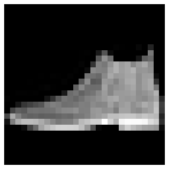
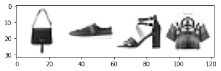

An Introduction to PyTorch Fundamentals for Training DL Models
This blog post explains the basics of PyTorch Tensors, the workflow to train a 2 layer Neural Network for a vision dataset and track the progress in a Tensorboard
AI/Foundations
Programming/Python
Author
Senthil Kumar
Published
August 15, 2021
Introduction
We have taken FashionMNIST dataset and prepared a simple 2-layer NN model to uncover the fundamental concepts of PyTorch
Before going into the DL portions, let us look at Tensors first
0. What are Tensors
Tensors are like numerical arrays that encode the input, output and weights/parameters of a model in the form of arrays and matrices.
Typical 1D and 2D arrays:
Source: docs.microsoft.com/en-US/learn
How to imagine a 3D array:
Source: docs.microsoft.com/en-US/learn
Tensors work better on GPUs. They are optimized for automatic differentiation
Tensors and numpy often have the same memory address. For example, review the code below
import numpy as npimport torchdata = [[1,2],[3,4]]np_array = np.array(data)tensor_array = torch.from_numpy(np_array)# doing multiplication opearation on `np_array`np.multiply(np_array,2,out=np_array)print(f"Numpy array:{np_array}")print(f"Tensor array:{tensor_array}")
# directly from a python datastructure elementdata = [[1,2],[3,4]]x_tensor_from_data = torch.tensor(data)# from numpy_arraynp_array = np.array(data)x_tensor_from_numpy = torch.from_numpy(np_array)# from other tensorsx_new_tensor = torch.rand_like(x_tensor_from_data, dtype=torch.float) # dtype overrides the dtype of z_tensor_from_data# random or new tensor of given shapeshape = (2,3,) # or just (2,3)x_new_tensor_2 = torch.ones(shape)
What are the attributes of a tensor?:
print(f"{x_new_tensor_2.shape}")print(f"{x_new_tensor_2.dtype}")print(f"{x_new_tensor_2.device}") # whether stored in CPU or GPU
When to use CPU and and when to use GPU while operating tensors?:
Some common tensor operations include: Any arithmetic operation, linear algebra, matrix manipulation (transposing, indexing, slicing)
Typical GPUs have 1000s of cores. GPUs can handle parallel processing.
Source: docs.microsoft.com/en-US/learn
Typical CPUs have 4 cores. Modern CPUs can have upto 16 cores. Cores are units that do the actual computation. Each core processes tasks in sequential order
Source: docs.microsoft.com/en-US/learn
Caveat: Copying large tensors across devices can be expensive w.r.t time and memory
PyTorch uses Nvidia CUDA library in the backend to operate on GPU cards
if torch.cuda._is_available(): gpu_tensor = original_tensor.to('cuda')
What are the common tensor operations?: - Joining or ConCATenate
new_tensor = torch.cat([tensor, tensor],dim=1) # join along column if dim=1
Matrix Multiplication
# you would have to do the transposey1 = tensor @ tensor.Ty2 = tensor.matmul(tensor.T)y3 = torch.rand_like(tensor)torch.matmul(tensor, tensor.T, out=y3)assert y1 = y2 = y3
convert single_element_tensor into a python datatype using .item() –> single_element_tensor = tensor1.sum(); python_variable = single_element_tensor.item()
In-place Operations in torch using _: x.add_(5) will add 5 to each element of x
tensor n = t.numpy() & np.add(n,2,out=n) –> A change in n will automatically change t (vice versa is true too)
Importing relevant modules
Code
%matplotlib inlineimport torchimport torchvisionfrom torch import nnfrom torch.utils.data import DataLoaderfrom torch.utils.data.sampler import SubsetRandomSampler# torchvision.datasets module contains `Dataset` objects for many real-world vision datafrom torchvision import datasets # other domain-specific libraries TorchAudio, TorchTextfrom torchvision.transforms import ( ToTensor, # for normalizing the pixel values to the range [0,1] Lambda, # to make user-defined functions as one of the transformations )import matplotlib.pyplot as pltfrom torch.utils.tensorboard import SummaryWriterimport numpy as np
1. Dataset and DataLoaders
Two data primitives to handle data efficiently: - torch.utils.data.Dataset - torch.utils.data.DataLoader
How should the data be preprocessed before training in DL?: - Pass samples of data in minibatches - reshuffle the data at every epoch to overfitting - leverage Python’s multiprocessing to speed up data retrieval
torch.utils.data.DataLoader abstracts all the above steps
What does Dataset do? - Dataset: Stores data samples and their corresponding labels - DataLoader: Wraps an iterable around Dataset to enable easy access to the samples. DataLoader can also be used along with torch.multiprocessing - torchvision.datasets and torchtext.datasets are both subclasses of torch.utils.data.Dataset (they have getitem and len methods implemented) and also they can be passed to a torch.utils.data.DataLoader
What does normalization do?: - Changes the range of the data - When one pixel value is 15 and another pixel is 190, the higher pixel value will deviate the learning
Why do we do normalization of data before training a DL: - Prediction accuracy is better for normalized data - Model can learn faster if data is normalized
More details on PyTorch Primitives
torchvision.datasets –> to use pre-existing datasets like FashionMNIST, coco, cifar, etc.,
torchvision.datasets have arguments/parameters to transform featuers (aka inputs) and target_transform to transform labels (like one hot encoding of labels
CustomDatasetClass must overwrite the magic methods of python such as - __init__, __getitem__ and __len__ methods inherited from Dataset
torchvision.transforms.ToTensor (to transform/modify the features) and torchvision.transforms.Lambda (to transform the target/labels) - torchvision.transforms.ToTensor() converts features to normalized tensors - torchvision.transforms.Lambda could be used to transform labels - Lambda(lambda y: torch.zeros(number_of_classes,dtype=torch.float).scatter_(dim=0, index=torch.tensor(y), value=1) ) - Tensor.scatter_ is used to change values of a tensor variable at specified indices
1A. Converting Data into Model Suitable Iterables
Downloading and transforming the datasets
Preparing train, validation and test datasets
# help(datasets.FashionMNIST)help(datasets.MNIST)
# Download training data from open datasets.training_data = datasets.FashionMNIST( root="data", train=True, download=True, transform=ToTensor(),)# Download test data from open datasets.test_data = datasets.FashionMNIST( root="data", train=False, download=True, transform=ToTensor(),)
/opt/conda/lib/python3.7/site-packages/torchvision/datasets/mnist.py:498: UserWarning: The given NumPy array is not writeable, and PyTorch does not support non-writeable tensors. This means you can write to the underlying (supposedly non-writeable) NumPy array using the tensor. You may want to copy the array to protect its data or make it writeable before converting it to a tensor. This type of warning will be suppressed for the rest of this program. (Triggered internally at /opt/conda/conda-bld/pytorch_1623448265233/work/torch/csrc/utils/tensor_numpy.cpp:180.)
return torch.from_numpy(parsed.astype(m[2], copy=False)).view(*s)
# If you have a custom dataset in your locationclass CustomImageDataset(Dataset):"""FashionMNIST like Image Dataset Class"""def__init__(self, annotations_file, img_dir, transform=None, target_transform=None):""" Args: transform (Optional): dataset will take an optional argument transform so that any required processing can be applied on the sample """self.img_labels = pd.read_csv(annotations_file)self.img_dir = img_dirself.transform = transformself.target_transform = target_transformdef__len__(self):returnlen(self.img)def__getitem__(self, idx):# format of data # image_location, label_type# tshirt1.jpg, T-shirt/top # class needs to be convered into numerical format# pant4.jpg, Trouser # class needs to be convered into numerical format img_path = os.path.join(self.img_dir, self.img_labels.iloc[idx,0]) image = tvio.read_image(img_path) label =self.img_labels.iloc[idx, 1]ifself.transform: image =self.transform(image)ifself.target_transform: label =self.target_transform(label) sample = {"image": image, "label": label}return sample# target_transform# turn the integer y values into a `one_hot_encoded` vector # 1. create a zero tensor of size 10 torch.zeros(10, dtype=torch.float)# 2. `scatter_` assigns a value =1the_target_lambda_function = Lambda(lambda y: torch.zeros(10, dtype=troch.float).scatter_(dim=0, index=torch.tensor(y), value=1))training_data = CustomImageDataset( root="data", # the path where the train/test data is stored train=True, # False if it is a test dataset download=False, # downloads the data from Web if not available at root transform=ToTensor(), # transform the features; converts PIL image or numpy array into a FloatTensor and scaled the image's pixel intensity to the range [0,1] target_transform=the_target_lambda_function)test_data = datasets.FashionMNIST( root="data", train=False, download=False, transform=ToTensor(), target_transform=the_target_lambda_function# target_transform=torch.nn.functional.one_hot(y, num_classes=10) # alternate way)
Preparing Validation Data from Test Data
indices =list(range(len(training_data)))np.random.shuffle(indices)print(indices[0:5])
batchsize =4# create iterables train_dataloader = DataLoader(training_data, sampler=training_data_sample, batch_size=batchsize)validation_dataloader = DataLoader(training_data, sampler=validation_data_sample, batch_size=batchsize)test_dataloader = DataLoader(test_data, batch_size=batchsize)print(len(train_dataloader))print(len(validation_dataloader))print(len(test_dataloader))# to understand the shape of input features and outputfor X,y in test_dataloader:print("Shape of Features:",X.shape)print("Shape of Labels:",y.shape)break
12000
3000
2500
Shape of Features: torch.Size([4, 1, 28, 28])
Shape of Labels: torch.Size([4])
len(train_dataloader)
12000
The above shape of training image is in the format NCHW
# looking into just one image, labelfigure = plt.figure(figsize=(5,5))img, label = test_data[0]plt.axis("off")plt.imshow(img.squeeze(),cmap="gray")

# Helper function for inline image displaydef matplotlib_imshow(img, one_channel=False):if one_channel: img = img.mean(dim=0) img = img /2+0.5# unnormalize npimg = img.numpy()if one_channel: plt.imshow(npimg, cmap="Greys")else: plt.imshow(np.transpose(npimg, (1, 2, 0)))dataiter =iter(train_dataloader)images, labels = dataiter.next()# Create a grid from the images and show themimg_grid = torchvision.utils.make_grid(images)matplotlib_imshow(img_grid, one_channel=True)

1C. Initiating the Tensorboard Logs and Visualizing Sample Images
# specifying the log directorywriter = SummaryWriter('runs/fashion_mnist_2_layer_NN_experiment_1')# writing the grid of 4 images to Tensorboard log dirwriter.add_image('Four Sample Fashion-MNIST Images', img_grid)writer.flush()
How to load the tensorboard
To view, start TensorBoard on the command line with: - tensorboard --logdir=runs - and open a browser tab to http://localhost:6006/ - Can view the sample images in images tab
Load the TensorBoard notebook extension for jupyter notebook
Build a NN with 2 hidden layers and 1 output layer
Components of a Neural Network:
Typical Neural Network:
image
Activation Function, Weight and Bias
image
Linear weighted sum of inputs: x = ∑(weights * inputs) + bias
f(x) = activation_func(x)
Activation Functions add non-linearity to the model
Different Activation Functions:
Sigmoid: 1/(1 + exp(-x))
Softmax: exp(x) / (sum(exp(x)))
ReLU: max(0,x)
Tanh: (exp(x) - exp(-x))/(exp(x) + exp(-x))
Building a neural network in PyTorch - torch.nn class provides all the building block needed to build a NN - Every module/layer in PyTorch subclases the torch.nn.Module - A NN is a composite module consisting of other modules (layers)
Initialize all layers in __init__ module
Build a 3-layer NN with
flattened 28*28 image as input,
2 hidden layers will have 512 neurons each and
the third layer (which also has relu activation function) will have 10 neurons each corresponding to the number of classes
# defining the model architectureclass NeuralNetwork(nn.Module):def__init__(self):# initialize the layers in __init__ constructorsuper(NeuralNetwork,self).__init__()# supercharge your sub-class by inheriting the defaults from Parent classself.flatten = nn.Flatten()# one can also use Functional API in PyTorch # but below codes use Sequential API# the below stack of layers generates scores or logitsself.linear_relu_stack = nn.Sequential(# hidden layer 1 consisting of 512 neurons nn.Linear(28*28, 512), nn.ReLU(),# hidden layer 2 consisting of 512 neurons too nn.Linear(512,512), nn.ReLU(),# output layer consisting of 10 neurons nn.Linear(512,10),# we can also build a NN without this final layer ReLU# instead can also run the log_softmax directly nn.ReLU(), )def forward(self,x): # need to pass the input argument x# function where the input is run through # the initialized layers x =self.flatten(x) logits =self.linear_relu_stack(x)return logits# create a instance of the class NeuralNetwork # move it to the device (CPU or GPU)model = NeuralNetwork().to(device)# print model structureprint(model)# is nn.ReLU in the final layer?# https://ai.stackexchange.com/questions/8491/does-it-make-sense-to-apply-softmax-on-top-of-relu
print("Weights stored in first layer: {model.linear_relu_stack[0].weight}\n")print("Bias stored in first layer: {model.linear_relu_stack[0].bias}\n") from name, param in model.named_parameters():print(f"Layer: {name} | Size: {param.size()}"
Training with training data and evaluating loss on Validation Data
3A.Setting Hyperparameters
num_of_epochs: The number of times the entire training dataset is pass through the network
batch_size: The number of data samples seen by the model before updating its weights. (derived parameter steps = total_training_data/batch_size - the number of batches needed to complete an epoch)
learning_rate: How much to change the weights in the w = w - learning_rate * gradient. Smaller value means the model will take a longer time to find best weights. Larger value of learning_rate might make the NN miss the optimal weights because we might step over the best values
Choice of loss_fn Common Loss Functions for classification problems :
nn.NLLLoss #Negative Log Likelihood
nn.CrossEntropyLoss # combination of nn.LogSoftmax and nn.NLLLoss
Choice of optimizers
torch.optim.SGD
torch.optim.Adam
torch.optim.RMSProp and many more …
num_of_epochs =40batchsize =4# already mentioned in the DataLoader argumentslearning_rate =1e-3loss_fn = nn.CrossEntropyLoss()optimizer = torch.optim.SGD(model.parameters(), lr=learning_rate )# SGD optimizer in PyTorch actually is Mini-batch Gradient Descent with momentum# it updates one mini-batch at a time (batchsize)# Source: https://discuss.pytorch.org/t/how-sgd-works-in-pytorch/8060
3B. Writing Core Training and Evaluation Loop Functions
loss_fn and optimizer are passed to train_loop and just loss_fn to test_loop
for i inrange(epochs):print(f"Epoch {i+1}\n ----------------------------") train_loop(train_dataloader, validation_dataloader, model, loss_fn, optimizer) test_loop(test_dataloader,model, loss_fn)print("Over!")
def train_loop(train_dataloader, validation_dataloader, model, loss_fn, optimizer, epoch): train_size =len(train_dataloader.dataset) validation_size =len(validation_dataloader.dataset) training_loss_per_epoch =0 validation_loss_per_epoch =0for batch_number, (X,y) inenumerate(train_dataloader): X,y = X.to(device), y.to(device)# compute prediction error pred = model(X) loss = loss_fn(pred, y)# Backpropagation steps# key optimizer steps# by default, gradients add up in PyTorch# we zero out in every iteration optimizer.zero_grad() # performs the gradient computation steps (across the DAG) loss.backward()# adjust the weights optimizer.step() training_loss_per_epoch += loss.item()# if batch_number % 100 == 0:# print(f"After completing {batch_number * len(X)} samples, the loss is:")# print(loss.item()) for batch_number, (X,y) inenumerate(validation_dataloader): X,y = X.to(device), y.to(device)# compute prediction error pred = model(X) loss = loss_fn(pred, y) validation_loss_per_epoch += loss.item() avg_training_loss = training_loss_per_epoch/train_size avg_validation_loss = validation_loss_per_epoch/validation_sizeprint(f"Average Training Loss of {epoch}: {avg_training_loss}")print(f"Average Validation Loss of {epoch}: {avg_validation_loss}") writer.add_scalars('Training vs. Validation Loss', {'Training': avg_training_loss, 'Validation': avg_validation_loss }, epoch )
def test_loop(test_dataloader,model, loss_fn, epoch): test_size =len(test_dataloader.dataset)# Failing to do eval can yield inconsistent inference results model.eval() test_loss_per_epoch, accuracy_per_epoch =0, 0# disabling gradient tracking while inferencewith torch.no_grad():for X,y in test_dataloader: X, y = X.to(device), y.to(device) pred = model(X) loss = loss_fn(pred, y) test_loss_per_epoch += loss.item() accuracy_per_epoch += (pred.argmax(1)==y).type(torch.float).sum().item()print(f"Average Test Loss of {epoch}: {test_loss_per_epoch/test_size}")print(f"Average Accuracy of {epoch}: {accuracy_per_epoch/test_size}")
Epoch Number: 0
---------------------
Average Training Loss of 0: 0.37492141907910503
Average Validation Loss of 0: 0.07822599628902972
Average Test Loss of 0: 0.3941003955438733
Average Accuracy of 0: 0.4513
Epoch Number: 1
---------------------
Average Training Loss of 1: 0.29412952572156986
Average Validation Loss of 1: 0.06984573040464893
Average Test Loss of 1: 0.3524202892445028
Average Accuracy of 1: 0.5089
Epoch Number: 37
---------------------
Average Training Loss of 37: 0.13975639427933614
Average Validation Loss of 37: 0.037423237568447926
Average Test Loss of 37: 0.19380079013922005
Average Accuracy of 37: 0.7052
Epoch Number: 38
---------------------
Average Training Loss of 38: 0.13921849230745761
Average Validation Loss of 38: 0.038412615390023046
Average Test Loss of 38: 0.19745682889677718
Average Accuracy of 38: 0.7015
Epoch Number: 39
---------------------
Average Training Loss of 39: 0.13862396091737622
Average Validation Loss of 39: 0.03721317019570803
Average Test Loss of 39: 0.1929354560287782
Average Accuracy of 39: 0.7063
CPU times: user 12min 2s, sys: 5.22 s, total: 12min 7s
Wall time: 11min 39s
truncated the results for easy viewing
Points to ponder: - The accuracy for this 2-layer NN stands at 71%. - The Hyperparameters - batch_size, learning_rate, choice of optimizer - can be varied to see how results change. - Changing Architecture: Deepening the number of hidden layers can help in improving the accuracy or changing the architecture to use CNN or any pre-trained NN like LeNet-5 or others will improve further
# pytorch models save the parameters in a internal state dictionary called `state_dict`torch.save(model.state_dict(),"data/modelname.pth")# infer from a saved model# instantiate the model architecture classmodel = NeuralNetwork()model.load_state_dict(torch.load("data/modelname.pth"))# the eval method is called before inferencing so that the batch normalization dropout layers are set to `evaluation` mod# Failing to do this can yield inconsistent inference resultsmodel.eval()
How to export a pytorch model to run in any Programming Language/Platform:
ONNX: Open Neural Network Exchange
Converting PyTorch model to onnx format aids in running the model in Java, Javascript, C# and ML.NET
# while explorting pytorch model to onnx, # we'd have to pass a sample input of the right shape# this will help produce a `persisted` ONNX model import torch.onnx as onnxinput_image = torch.zeros((1,28,28))onnx_model_location ='data/model.onnx'onnx.export(model, input_image, onnx_model)
4. Predict using the Trained Model
Loading the trained model and predicting for unseen data
# construct the model structuremodel = NeuralNetwork()# load the state_dictmodel.load_state_dict(torch.load("model_weights/fmnist_2_layer_nn_model_batch_size_4.pth"))classes = ["T-shirt/top","Trouser","Pullover","Dress","Coat","Sandal","Shirt","Sneaker","Bag","Ankle boot",]model.eval()x, y = test_data[0][0], test_data[0][1]with torch.no_grad(): pred = model(x) predicted, actual = classes[pred[0].argmax(0)], classes[y]print(f'Predicted: "{predicted}", Actual: "{actual}"')
Predicted: "Ankle boot", Actual: "Ankle boot"
# these are logit scores and not softmax outputs # yet they are enough for predicting the class # since the logits are finally coming out of a ReLU() unit# A ReLU outputs from (0,max)pred[0]
Reiterating the steps we have already done using Tensorboard
1.Specifying the Log directory and using add_images method
# `torch.utils.data.tensorboard.SummaryWriter` class# specifying the log directorywriter = SummaryWriter('runs/fashion_mnist_2_layer_NN_experiment_1')# writing the grid of 4 images to Tensorboard log dir# we can look at `IMAGES` tab of Tensorboard for thiswriter.add_image('Four Sample Fashion-MNIST Images', img_grid)writer.flush()
2.Tracking Epoch level Average Training and Validation Losses.
# We can track in the `SCALARS` tab of the Tensorboardwriter.add_scalars('Training vs. Validation Loss', {'Training': avg_training_loss, 'Validation': avg_validation_loss }, epoch )
The Graph of Training Loss (blue line) and Validation Loss (green line) in Tensorboard
3.After trained model is obtained, we can look at the graph to trace the sample input through your model
# We can track in the `GRAPH` tab of the Tensorboarddataiter =iter(train_dataloader)images, labels = dataiter.next()# add_graph() will trace the sample input through your modelwriter.add_graph(model, images)writer.flush()
NN_graph in Tensorboard
6. Sources and GitHub Links
Sources: - MSFT PyTorch Course | link - PyTorch Official Tutorial Explaining with FashionMNIST data | link - A useful Medium article on FashionMNIST dataset | link
Github Links: - Dockerfile to replicate the environment | link - To replicate the DL workflow described here | Notebook link
 Source: docs.microsoft.com/en-US/learn
Source: docs.microsoft.com/en-US/learn Source: docs.microsoft.com/en-US/learn
Source: docs.microsoft.com/en-US/learn Source: docs.microsoft.com/en-US/learn
Source: docs.microsoft.com/en-US/learn Source: docs.microsoft.com/en-US/learn
Source: docs.microsoft.com/en-US/learn

 Source: docs.microsoft.com/en-US/learn
Source: docs.microsoft.com/en-US/learn